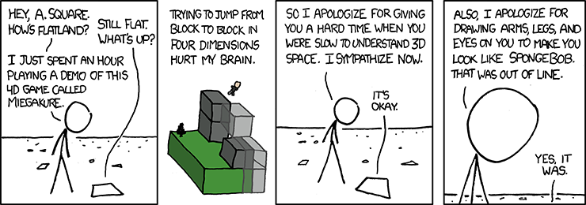
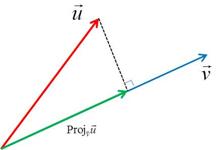
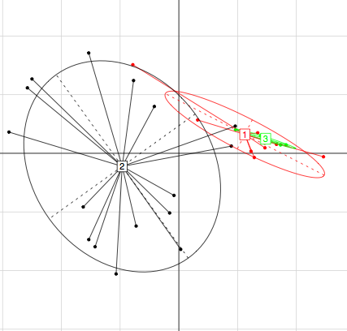

Multivariate Analysis
BDS^3 Uzhhorod, Ukraine
2023-07-01
Data visualization and preparation
It is always beneficial to start a multidimensional analysis
by checking the simple one dimensional and two dimensional
summary statistics, we can visualize these using a graphics
package that builds on ggplot2 called GGally.
Low dimensional data summaries and preparation
What do we mean by low dimensional?

If we are studying only one variable, just one column of our matrix,
we might call it \({\mathbf x}\) or \({\mathbf x}_{\bullet j}\); we call it one dimensional.
A one dimensional summary a histogram that shows that variable’s distribution,
or we could compute its mean \(\bar{x}\) or median, these are zero-th dimensional
summaries of one dimension data.
In lecture 3 we studied two dimensional scatterplots.
When considering two variables (\(x\) and \(y\)) measured together on a set of observations,
the correlation coefficient measures how the variables co-vary.
This is a single number summarizes two dimensional data, its formula involves \(\bar{x}\) and \(\bar{y}\): \[\hat{\rho}=\frac{\sum_{i=1}^n (x_i-\bar{x})(y_i-\bar{y})}{\sqrt{\sum_{i=1}^n (x_i-\bar{x})^2} \sqrt{\sum_{i=1}^n (y_i-\bar{y})^2}} \label{eq:corrcoeff}\]
cor(turtles[, -1]) length width height
length 1.000 0.978 0.965
width 0.978 1.000 0.961
height 0.965 0.961 1.000
ggpairs(athletes)

Dimension reduction
PCA is an ‘unsupervised learning technique’
because it treats all variables as having
the same status.
PCA is visualization technique which produces
maps of both variables and observations.
We are going to give you a flavor of
what is called multivariate analyses.
As a useful first approximation, we
formulate many of the methods through
manipulations called linear algebra.
The raison d’être for multivariate analyses
is connections or associations between
the different variables.
If the columns of the matrix are unrelated,
we should just study each column separately
and do standard univariate statistics on them
one by one.
Use geometry:

Low Dimensional Projections
Here we show one way of projecting two dimensional data onto a line.
The olympic data come from the ade4 package, they are the
performances of decathlon athletes in an olympic competition.

Scatterplot of two variables showing projection on the x coordinate in red.
How do we summarize two
dimensional data by a line?
In general, we lose information about the points when we
project down from two dimensions (a plane) to one (a line).
If we do it just by using the original coordinates, e.g., the x coordinate
as we did above, we lose all the information about the second one.
There are actually many ways of projecting the point cloud
onto a line. One is to use what are known as regression lines.
Let’s look at these lines and how there are constructed in R:
Regressing one variable on the other
The disc variable on the weight
attach(athletes)
require(ggplot2)
reg1 <- lm(disc~weight, data=athletes)
a <- reg1$coefficients[1] # intercept
b <- reg1$coefficients[2] # slope
pline <- p + geom_abline(intercept=a, slope=b, col="blue")
proj <- pline + geom_segment(aes(
x=weight, xend=weight,
y=disc, yend=reg1$fitted),
linetype=1, colour="red",
arrow=arrow(length=unit(0.15, "cm")))
print(proj)The blue line minimizes the sum of squares
of the vertical residuals (in red).
What is the variance of the points
along the blue line?

Regression of weight on discus

Variance of points:
The orange line minimizes the horizontal residuals for the weight variable in orange.
The PCA line: it minimizes in both directions
xy <- cbind(athletes$disc, athletes$weight)
svda <- svd(xy)
pc <- xy %*% svda$v[, 1] %*% t(svda$v[ ,1])
bp <- svda$v[2, 1] / svda$v[1, 1]
ap <- mean(pc[, 2]) - bp * mean(pc[, 1])
p <- p +
geom_segment(xend=pc[,1], yend=pc[, 2]) +
geom_abline(intercept=ap, slope=bp, col="purple", lwd=1.5)
p

The purple line minimizes
both residuals and thus
(through Pythagoras) it
minimizes the sum of
squared distances from
the points to the line.
Minimizing the distance to the line in both directions,
the purple line is the principal component line,
the green and blue lines are the regression lines.
Variance along the line
The lines created here are sensitive to the choice of units;
because we have made the standard deviations equal to one for both variables,
the PCA line is the diagonal that cuts exactly in the middle of both regression lines.
The data were centered by subtracting their means, thus
ensuring that the line passes through the origin \((0,0)\).
Compute the variance of the points on the purple line.
The coordinates of the points when we made the plot, these are in the pc vector:
PCA for 2 dimensional data
ppdf <- data.frame(
PC1n=-svda$u[, 1]*svda$d[1],
PC2n= svda$u[, 2]*svda$d[2])
p <- ggplot(ppdf, aes(x=PC1n,y=PC2n)) +
geom_point() + xlab("PC1") + ylab("PC2") +
xlim(-3.5, 2.7) + ylim(-2,2) + coord_fixed() +
geom_hline(yintercept=0, color="purple", lwd=1.5, alpha=0.5) +
geom_point(aes(x=PC1n, y=0), color="red") +
geom_segment(aes(xend=PC1n, yend=0), color="red")
p

Good Projections
What is this?

Step one: always the screeplot
The screeplot showing the eigenvalues for the standardized data:
one very large component in this case and two very small ones,
the data are (almost) one dimensional.

Why ?
Choose k carefully:

Step Two: Variables

Biplot

All together
scatter(pca.turtles)
Exercise: How are the following numbers related?
Lizards Data Analyses
This data set describes 18 lizards as reported by Bauwens and D'iaz-Uriarte (1997).
It also gives life-history traits corresponding to these 18 species.
-
mean.L(mean length (mm)),matur.L(length at maturity (mm)),
-
max.L(maximum length (mm)),hatch.L(hatchling length (mm)),
-
hatch.m(hatchling mass (g)),clutch.S(Clutch size),
-
age.mat(age at maturity (number of months of activity)),
-
clutch.F(clutch frequency).
[1] "traits" "hprA" "hprB" lizards$traits[1:4, ]| mean.L | matur.L | max.L | hatch.L | hatch.m | clutch.S | age.mat | clutch.F | |
|---|---|---|---|---|---|---|---|---|
| Sa | 69.2 | 58 | 82 | 27.8 | 0.572 | 6.0 | 13 | 1.5 |
| Sh | 48.4 | 42 | 56 | 22.9 | 0.310 | 3.2 | 5 | 2.0 |
| Tl | 168.4 | 132 | 190 | 42.8 | 2.235 | 16.9 | 19 | 1.0 |
| Mc | 66.1 | 56 | 72 | 25.0 | 0.441 | 7.2 | 11 | 1.5 |
It is always a good idea to check the variables one at a time and two at a time to see what the basic statistics are for the data
mean.L matur.L max.L hatch.L hatch.m clutch.S age.mat clutch.F
71.34 59.39 82.83 26.88 0.56 5.87 10.89 1.56 cor(tabtraits) mean.L matur.L max.L hatch.L hatch.m clutch.S age.mat clutch.F
mean.L 1.00 0.99 0.99 0.89 0.94 0.92 0.77 -0.48
matur.L 0.99 1.00 0.99 0.90 0.92 0.92 0.79 -0.49
max.L 0.99 0.99 1.00 0.88 0.92 0.91 0.78 -0.51
hatch.L 0.89 0.90 0.88 1.00 0.96 0.72 0.58 -0.42
hatch.m 0.94 0.92 0.92 0.96 1.00 0.78 0.64 -0.45
clutch.S 0.92 0.92 0.91 0.72 0.78 1.00 0.81 -0.55
age.mat 0.77 0.79 0.78 0.58 0.64 0.81 1.00 -0.62
clutch.F -0.48 -0.49 -0.51 -0.42 -0.45 -0.55 -0.62 1.00Biplot
resDuality diagramm
class: pca dudi
$call: dudi.pca(df = tabtraits, scannf = FALSE, nf = 2)
$nf: 2 axis-components saved
$rank: 8
eigen values: 6.5 0.83 0.42 0.17 0.045 ...
vector length mode content
1 $cw 8 numeric column weights
2 $lw 18 numeric row weights
3 $eig 8 numeric eigen values
data.frame nrow ncol content
1 $tab 18 8 modified array
2 $li 18 2 row coordinates
3 $l1 18 2 row normed scores
4 $co 8 2 column coordinates
5 $c1 8 2 column normed scores
other elements: cent norm barplot(res$eig)
biplot(res)
res$eig / (sum(res$eig))[1] 0.81118 0.10387 0.05219 0.02133 0.00563 0.00488 0.00061 0.00031The Decathlon Athletes
m100 long weight highj m400 m110 disc pole javel m1500
m100 1.0 -0.5 -0.2 -0.1 0.6 0.6 0.0 -0.4 -0.1 0.3
long -0.5 1.0 0.1 0.3 -0.5 -0.5 0.0 0.3 0.2 -0.4
weight -0.2 0.1 1.0 0.1 0.1 -0.3 0.8 0.5 0.6 0.3
highj -0.1 0.3 0.1 1.0 -0.1 -0.3 0.1 0.2 0.1 -0.1
m400 0.6 -0.5 0.1 -0.1 1.0 0.5 0.1 -0.3 0.1 0.6
m110 0.6 -0.5 -0.3 -0.3 0.5 1.0 -0.1 -0.5 -0.1 0.1
disc 0.0 0.0 0.8 0.1 0.1 -0.1 1.0 0.3 0.4 0.4
pole -0.4 0.3 0.5 0.2 -0.3 -0.5 0.3 1.0 0.3 0.0
javel -0.1 0.2 0.6 0.1 0.1 -0.1 0.4 0.3 1.0 0.1
m1500 0.3 -0.4 0.3 -0.1 0.6 0.1 0.4 0.0 0.1 1.0pca.ath <- dudi.pca(athletes, scan=FALSE)
pca.ath$eig [1] 3.42 2.61 0.94 0.88 0.56 0.49 0.43 0.31 0.27 0.10barplot(pca.ath$eig)
The screeplot is the first thing to look at, it tells us
that it is satisfactory to use a two dimensional plot.
Correlation Circle
The correlation circle made by showing the projection of
the old variables onto the two first new principal axes:
s.corcircle(pca.ath$co, clab=1, grid=FALSE, fullcircle=TRUE, box=FALSE)
m100 long weight highj m400 m110 disc pole javel m1500
m100 1.0 0.5 0.2 0.1 0.6 0.6 0.0 0.4 0.1 0.3
long 0.5 1.0 0.1 0.3 0.5 0.5 0.0 0.3 0.2 0.4
weight 0.2 0.1 1.0 0.1 -0.1 0.3 0.8 0.5 0.6 -0.3
highj 0.1 0.3 0.1 1.0 0.1 0.3 0.1 0.2 0.1 0.1
m400 0.6 0.5 -0.1 0.1 1.0 0.5 -0.1 0.3 -0.1 0.6
m110 0.6 0.5 0.3 0.3 0.5 1.0 0.1 0.5 0.1 0.1
disc 0.0 0.0 0.8 0.1 -0.1 0.1 1.0 0.3 0.4 -0.4
pole 0.4 0.3 0.5 0.2 0.3 0.5 0.3 1.0 0.3 0.0
javel 0.1 0.2 0.6 0.1 -0.1 0.1 0.4 0.3 1.0 -0.1
m1500 0.3 0.4 -0.3 0.1 0.6 0.1 -0.4 0.0 -0.1 1.0pcan.ath <- dudi.pca(athletes, scannf=FALSE, nf=2)
pcan.ath$eig [1] 3.42 2.61 0.94 0.88 0.56 0.49 0.43 0.31 0.27 0.10Now all the negative correlations are quite small ones.
Doing the screeplot over again will show no change in the eigenvalues,
the only thing that changes is the sign of loadings for the m variables.
New Data changing signs
s.corcircle(pcan.ath$co, clab=1.2, box=FALSE)
Correlation circle after changing the signs of the running variables.
Observations

data(olympic)
olympic$score [1] 8488 8399 8328 8306 8286 8272 8216 8189 8180 8167 8143 8114 8093 8083 8036
[16] 8021 7869 7860 7859 7781 7753 7745 7743 7623 7579 7517 7505 7422 7310 7237
[31] 7231 7016 6907Link to overall scores

Scatterplot of the scores given as a supplementary variable and the first principal component;
the points are labeled by their order in the data set.
PCA as an exploratory tool:
using meta-information
## center and scale the data
## (they have already had variance normalization applied to them)
res.Msig3 <- dudi.pca(Msig3transp, center=TRUE, scale=TRUE, scannf=FALSE, nf=4)
screeplot(res.Msig3, main="")
Plot by cell types
celltypes
EFF MEM NAI
10 9 11 require(ggplot2)
gg <- cbind(res.Msig3$li, Cluster=celltypes)
gg <- cbind(sample=rownames(gg), gg)
ggplot(gg, aes(x=Axis1, y=Axis2)) +
geom_point(aes(colour=factor(Cluster)), size=2) +
geom_hline(yintercept=0, linetype=2) +
geom_vline(xintercept=0, linetype=2) +
scale_color_discrete(name="Cluster") +
coord_fixed() + xlim(-14,18) + ylim(-8,8)
PCA of gene expression for a subset of 156 genes involved in specificities
of each of the three separate T cell types: effector, naive and memory
Sample situations in PC map
## PCA Example
require(ade4)
require(ggplot2)
load("resources/logtmat.RData")
pca.result <- dudi.pca(logtmat, scannf=FALSE, nf=3)
labs <- rownames(pca.result$li)
nos <- substr(labs, 3, 4)
type <- as.factor(substr(labs, 1, 2))
kos <- which(type == "ko")
wts <- which(type == "wt")
pcs <- data.frame(
Axis1=pca.result$li[, 1],
Axis2=pca.result$li[, 2], labs, type)
pcsplot <- ggplot(pcs, aes(x=Axis1, y=Axis2,
label=labs, group=nos, colour=type)) +
geom_text(size=4, vjust=-0.5) + geom_point()
pcsplot + geom_hline(yintercept=0, linetype=2) +
geom_vline(xintercept=0, linetype=2) +
coord_fixed() + ylim(-12,18) 
Extra Connections
pcsplot + geom_line(colour="red") + coord_fixed() + ylim(-12,18)
Checking data by frequent multivariate projections
Phylochip data allowed us to discover a batch effect (phylochip).

Weighted PCA
Sometimes we want to see variability between different groups or observations but need to weight them.
This can happen when wanting to summarize data for heterogeneous groups with unequal sizes.
Let’s do this for the specific example of the Hiiragi (Ohnishi2014) data
we saw in Lectures 3 and 5 and show how reweighting is relevant here.
library("Hiiragi2013")
set.seed(2013)
data("x")
FGF4probes <- (fData(x)$symbol == "Fgf4")
groups <- split(seq_len(ncol(x)), pData(x)$sampleGroup)
safeSelect <- function(grpnames) {
stopifnot(all(grpnames %in% names(groups)))
unlist(groups[grpnames])
}
g <- safeSelect(c("E3.25",
"E3.5 (EPI)", "E3.5 (PE)",
"E4.5 (EPI)", "E4.5 (PE)"))
nfeatures <- 100
varianceOrder <- order(rowVars(exprs(x[, g])), decreasing=TRUE)
varianceOrder <- setdiff(varianceOrder, which(FGF4probes))
selectedFeatures <- varianceOrder[seq_len(nfeatures)]
sampleColourMap <- setNames(
unique(pData(x)$sampleColour),
unique(pData(x)$sampleGroup))
xwt <- x[selectedFeatures, g]
tab <- table(xwt$sampleGroup)
tab
E3.25 E3.5 (EPI) E3.5 (PE) E4.5 (EPI) E4.5 (PE)
36 11 11 4 4 We want to do a PCA on 66 points from the wild type genotype data, but the groups
are not equally represented, so we will reweight them to even out the representations.
selectedSamples <- with(pData(x), genotype == "WT")
xe <- x[, selectedSamples]
## To account for the different numbers in the groups, we reweight the samples
wt <- c(rep(1,36), rep(36/11,11), rep(36/11,11), rep(36/4,4), rep(36/4,4))
length(wt)[1] 66## reweighted of groups using 'dudi.pca'
library("factoextra")
dfx <- data.frame(t(exprs(xwt)))
resPCAD <- dudi.pca(dfx, row.w=wt, center=TRUE, scale=TRUE, nf=2, scannf=FALSE)fviz_eig(resPCAD)
fviz_pca_ind(resPCAD,
habillage=xwt$sampleGroup,
col.ind=xwt$sampleColour,
geom="point") 
More examples of
supplementary variables
One categorical variable: project the mean points
| Alcohol | MalicAcid | Ash | AlcAsh | Mg | Phenols | Flav |
|---|---|---|---|---|---|---|
| 14 | 1.7 | 2.4 | 16 | 127 | 2.8 | 3.1 |
| 13 | 1.8 | 2.1 | 11 | 100 | 2.6 | 2.8 |
| 13 | 2.4 | 2.7 | 19 | 101 | 2.8 | 3.2 |

wine.class
barolo grignolino barbera
59 71 48 fviz_pca_biplot(wine.pca,
habillage=wine.class,
addEllipses=TRUE,
circle=TRUE)
Projecting Ellipses
We’ll see later when we look at Microbiome data that sometimes, this projection can be problematic.